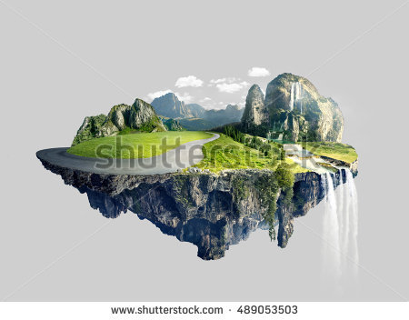

Floating Platform

This stage has both regular ground and ground with flowing water. The water doesn't interfere with too much gameplay, but will occassionaly pick up in level of strength, causing characters to trip and slide towards and possibly off the edge of the stage requiring quick thinking recovery.
This stage also has occasional rectangular platforms materialize in the air for charcters to play on or off of. This possibly the most popular stage in the game, and most certainly the most commonly used in tournament play.